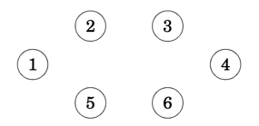
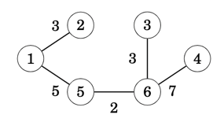

Kruskal's MST Algorithm
In Kruskal’s algorithm, we start with the spanning tree containing only the nodes of the graph and with no any edges connecting the nodes.
Then the algorithm goes through, adding the edges one at a time, ordered by their weights, and as long as the edge is not creating a cycle.
Approach
Let's look at the following input graph as an example.

The algorithm maintains the components of the tree. Initially, each node of the graph belongs to a separate component. As shown below there are six components since none of the nodes are connected.

We always start with the lowest weighted edge by adding it to the tree, in this case (5,6). As result, two components are now merged into one as in the below example where nodes 5 and 6 form a new component

Next in order are edges (6,3),(1,2),... and so on, until finally we have added all edges in the graph, one by one and with all nodes now merged into a single component, hence the minimum spanning tree has been found

Overall the approach can be summarised as following
- Phase 1: Sort Edges by minimum cost first
- Phase 2: Build Minimum Spanning Tree
- Create an empty graph
G - Initiate the graph components, that is, one per node
- While there are
> 1graph components remaining- Retrieve edge with the lowest weight
(src,dst) - Find component for
src, let's say it issrc' - Find component for
dst, let's say it isdst' - if
src'is different todst'then- Merge
dst'into thesrc'component - Add edge
(src,dst)into the graphG
- Merge
- Retrieve edge with the lowest weight
- Create an empty graph
Super Nodes as Components
The SuperNodes struct used to solve the minimum cut algorithm is more or less the right tool in this instance given that the definition of a super node is synonymous to a graph component.
The SuperNodes structure, provides us with the
- merging of two super node components into a super node
- finding of the super node component that a given node belongs to
#[derive(Debug)]
/// Helper Structure that holds the `set` of merged nodes under a super node `key`
/// The HashMap therefore is used as [Key:Super Node, Value: Set of Merged Nodes]
/// A super node's set is a `Graph Component` in itself, that is, you can visit a Node from any other Node within the set
pub struct SuperNodes {
super_nodes:HashMap<Node,HashSet<Node>>
}
impl Clone for SuperNodes {
fn clone(&self) -> Self {
SuperNodes { super_nodes: self.super_nodes.clone() }
}
}
impl SuperNodes {
/// Total size of `Graph Components`, that is, super nodes
pub fn len(&self) -> usize { self.super_nodes.len() }
/// Given an Graph node, the function returns the Super Node that it belongs
/// for example given the super node [Key:1, Set:{1,2,3,4,5}]
/// querying for node `3` will return `1` as its super node
pub fn find_supernode(&self, node: &Node) -> Node {
// is this a super node ?
if self.contains_supernode(node) {
// if yes, just return it
*node
} else {
// otherwise find its super node and return it
// get an Iterator for searching each super node
let mut sets = self.super_nodes.iter();
loop {
// If next returns [Super Node, Node Set] proceed otherwise exist with None
let Some((&src, set)) = sets.next() else { break None };
// Is the queried Node in the set ?
if set.contains(node) {
// yes, return the super node
break Some(src)
}
}.unwrap_or_else(|| panic!("find_supernode(): Unexpected error, cannot find super node for {node}"))
}
}
/// Returns the graph component, aka `set` of nodes, for a given super node `key`,
/// otherwise `None` if it doesn't exist
pub fn contains_supernode(&self, node: &Node) -> bool {
self.super_nodes.contains_key(node)
}
/// The function takes two super nodes and merges them into one
/// The `dst` super node is merged onto the `src` super node
pub fn merge_nodes(&mut self, src:Node, dst:Node) -> &mut HashSet<Node> {
// remove both nodes that form the random edge and
// hold onto the incoming/outgoing edges
let super_src = self.super_nodes.remove(&src).unwrap();
let super_dst = self.super_nodes.remove(&dst).unwrap();
// combine the incoming/outgoing edges for attaching onto the new super-node
let super_node = super_src.union(&super_dst).copied().collect::<HashSet<Node>>();
// re-insert the src node as the new super-node and attach the resulting union
self.super_nodes.entry(src).or_insert(super_node)
}
/// Provides an iterator that yields the Node Set of each super node
pub fn iter(&self) -> SuperNodeIter {
SuperNodeIter { iter: self.super_nodes.iter() }
}
}
/// Ability for SuperNode struct to use indexing for search
/// e.g super_node[3] will return the HashSet corresponding to key `3`
impl Index<Node> for SuperNodes {
type Output = HashSet<Node>;
fn index(&self, index: Node) -> &Self::Output {
&self.super_nodes[&index]
}
}
/// HashNode Iterator structure
pub struct SuperNodeIter<'a> {
iter: hash_map::Iter<'a, Node, HashSet<Node>>
}
/// HashNode Iterator implementation yields a HashSet at a time
impl<'a> Iterator for SuperNodeIter<'a> {
type Item = &'a HashSet<Node>;
fn next(&mut self) -> Option<Self::Item> {
if let Some(super_node) = self.iter.next() {
Some(super_node.1)
} else { None }
}
}
BinaryHeap for edge Ordering
To provide an ordered edge list we use the BinaryHeap collection that uses the edge's weight as the prioritisation key. The following Step implementation provide us with the desirable result.
/// BinaryHeap Step structure containing `Edge(src,(dst,cost))` tuple
/// The `cost` is only used as the prioritisation key for the `Heap`
/// Implementing MinHeap through reverse comparison of Other against Self
impl PartialOrd for Edge {
fn partial_cmp(&self, other: &Self) -> Option<Ordering> {
match other.1 {
N(_) => other.partial_cmp(self),
NC(_, cost) => {
let Edge(_,NC(_,sc)) = self else { panic!("") };
cost.partial_cmp(sc)
}
}
}
}
impl Ord for Edge {
fn cmp(&self, other: &Self) -> Ordering {
self.partial_cmp(other).unwrap()
}
}
Additionally, we have the following helper Graph functions that provide us with
- the ordered edge list
- the sum of weights for all edges in the graph
- adding an edge into the graph
/// Sums up the cost of all weighted edges
pub fn sum_edges(&self) -> Cost {
self.edges
.values()
.fold(0, |cost, edges| {
cost + edges.iter()
.map(|&dst| {
let NC(_,c) = dst else { panic!("get_mst_cost(): Edge destination node is not of type NodeType::NC") };
c
})
.reduce(|acc,c| acc + c )
.unwrap()
}) >> 1 // in an undirected graph we count twice the edge hence dividing by 2
}
/// Adds a new Edge to the graph
pub fn push_edge(&mut self, edge: Edge) {
let Edge(src, dst) = edge;
self.nodes.insert(src);
self.edges.entry(src)
.or_default()
.insert(dst);
let NC(dst,cost) = dst else { panic!("") };
self.nodes.insert(dst);
self.edges.entry(dst)
.or_default()
.insert(NC(src,cost));
}
/// Returns Graph's edges in the form of a MinHeap, that is,
/// the lowest cost edge at the top of the heap
pub fn get_edges_by_cost(&self) -> BinaryHeap<Edge> {
self.edges.iter()
.fold(BinaryHeap::new(), |mut heap, (&src, edges)| {
heap.extend(
edges.iter().map(|&dst| Edge(src,dst))
);
heap
})
}
Implementation
As a result, the following implementation consolidates all of the above into the Kruskal's algorithm implementation.
/// MST using Kruskal's algorithm implementation
pub fn mst_kruska(&self) -> Option<Graph> {
// Get the ordered heap by lowest cost Edge on top
let mut heap = self.get_edges_by_cost();
// Keeps the graph's components, that is, a super node is a graph component's lead node
// The initial state is for each node to be a lead component node with a component of its own
let mut snodes = self.get_super_nodes();
// the output graph that will hold *only* the edges
// that form the minimum spanning tree
let mut graph = Graph::new();
// As long as more than 2 components
while snodes.len() > 1 {
// get the edge with the lowest cost
// otherwise if we've run out of edges while there are 2 or more components
// then the graph IS NOT CONNECTED
let Some(edge) = heap.pop() else { return None };
let Edge(src, NC(dst, _)) = edge else { panic!("mst_kruska() - Cannot find NodeType::NC") };
// print!("({src:2}->{dst:2}):{cost:6} - ");
// if src is not a super node then get its super node
let src = snodes.find_supernode(&src);
// if dst is not a super node then get its super node
let dst = snodes.find_supernode(&dst);
// if src component differs from dst component then merge the two and save the edge connecting them
if src != dst {
snodes.merge_nodes(src, dst);
graph.push_edge(edge);
// println!("Store");
} else {
// println!("Skip");
}
}
Some(graph)
}